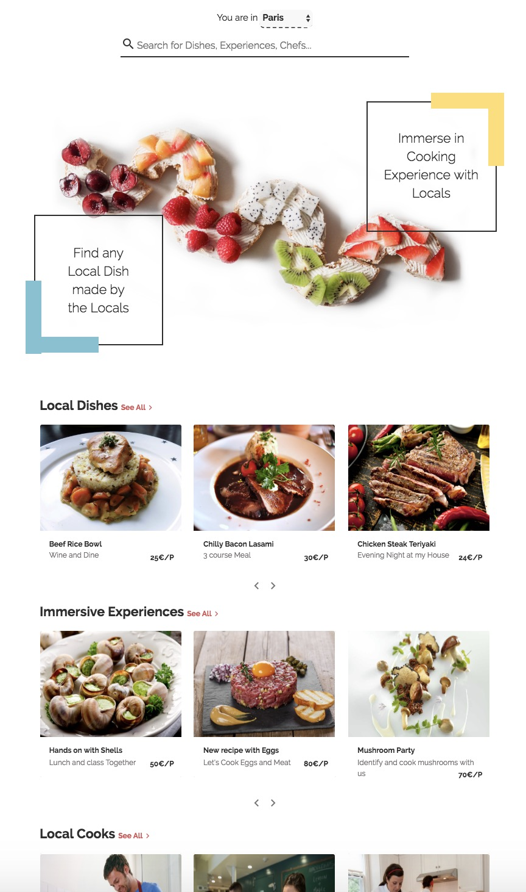
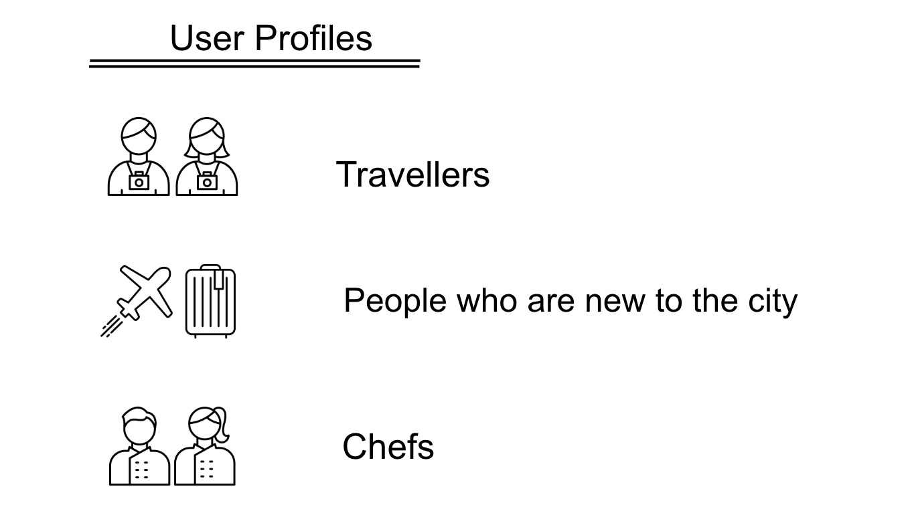
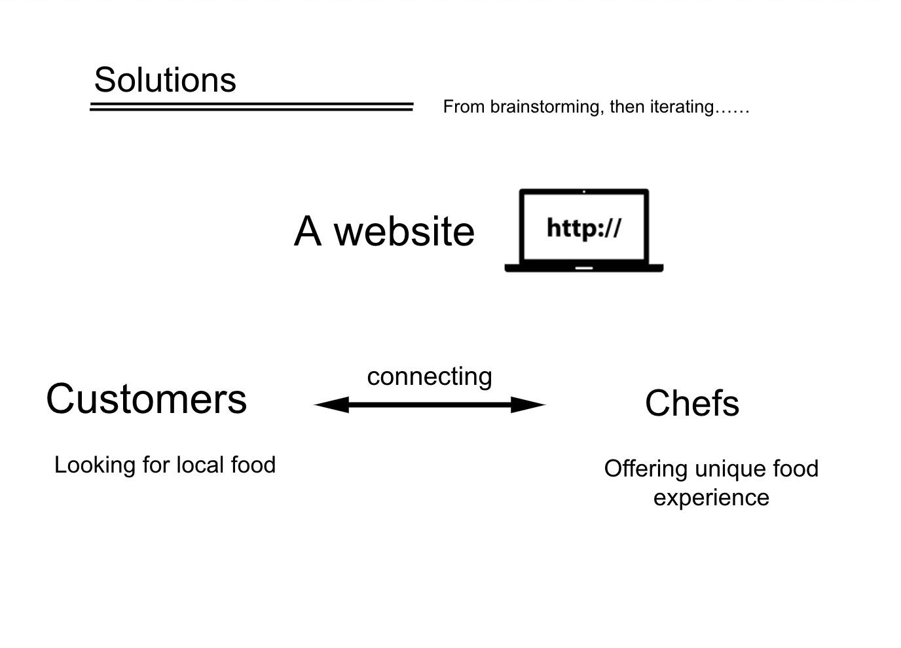
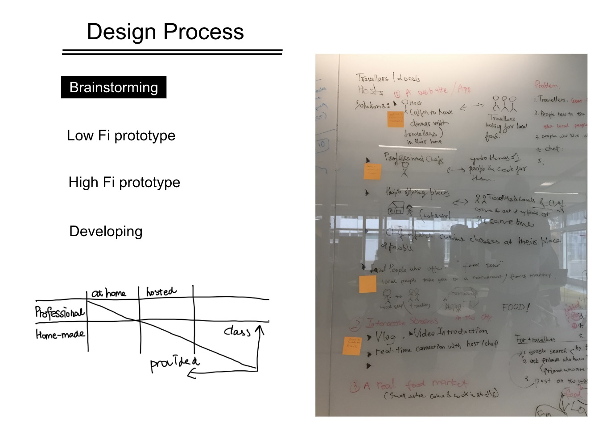

Project discription: Food is an integral part of humans wherever we go. Whether at home, traveling to a different city or country or when one has shifted to another city. Fast food and other unhealthy food are readily available and similar everywhere. This is where the charm of local cuisine comes in which is also a major attractor of people in a particular location. It is a common problem to be lost while looking for the best local food. People rely on Google or friends for this. Sometimes you don't even have access to these. Eat as a Local comes in times like this to bridge the gap between the people and their favorite food experiences.

System Design: We started with the hypotheses that people are facing problems in finding a local food experience while traveling to other locations within the country or to a different country. Our process included independent research including interviews, surveys online and testing with a real solution.
We had 2 major groups of people. First, the people wanting to experience local food. Second, the people who can host other people are local cooks while there are also Professional Chefs who want to provide independent services. We interviewed 6 people. 5 regular people and 1 being a Professional Chef. We wanted to know what problems had they faced while in a different location looking for the local food experience.
Once the idea was grounded with some research, we identified that our platform needs to have a way to make users present themselves as Customers and Chefs and this can be also done both at the same time. A person could be a user and Chef at the same time. We identified the major parts of our WebApp that were core to the solution.



Development Process: We started to develop the web platform after the design validation and we did it in a period of 4 weeks. We chose the by building a front-end version of our solution first and we are currently working to do the backend as well. The design is being converted to the final version. We are using Firebase for hosting our web platform. It is a convenient product offered by Google and we can currently use it in the Free version. We have also incorporated simultaneous testing with development. As soon as the Home Page and Login/Registration pages were complete, we hosted them and tested with our participants in a real environment. The results were similar as to the second video prototype. We continue to build the final product in modules for now.